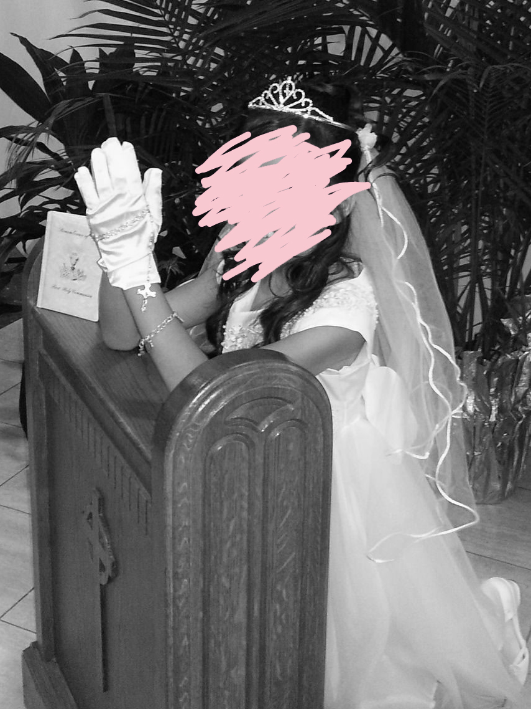

Me, First Holy Communion
Hi, I'm Leah.
I grew up in South Texas. My Mexican heritage, my Catholic upbringing and the streets of downtown Corpus Christi show up in almost everything I make.
When I was little I didn't just play pretend. I made the props, designed the costumes and gave every game its own identity. I didn't know it then, but I was already a designer.
- Studying
- BFA Communication Design, Texas A&M University–Corpus Christi
- Graduating
- 2028
- Based in
- Corpus Christi, Texas
- Open to
- Design internships and freelance work
From a feeling to a system.
Most projects start with a feeling or a memory I can't put into words yet. Here's how it turns into something you can hold.
- (01)
Research
I collect imagery, references, textures and words until something feels connected to the idea.
- (02)
Experiment
Sketches, collage and marker comps, by hand and on screen.
- (03)
Build a language
Type, image-making, composition and colour turn the idea into a visual system.
- (04)
Refine
Critique and refinement, round after round, then mockups and print tests.
"Her sketching and digital iteration process stood out as both rare and valuable."
What I do
Four kinds of work, one habit: a strict system with a little chaos inside it.
- (01)
Identity
Logos, marks and the systems that carry them.
City ReliquaryThreads - (02)
Packaging
Labels and boxes with a point of view.
Insane GrainSpace Age - (03)
Editorial
Magazines, zines, books and booklets.
Alien InvasionTribute ZineGulliver's Travels - (04)
Type
Display typefaces drawn from historical sources.
Surendra
By hand
Sketching · Collage · Marker comps · Printmaking
Also
Illustration · Motion
Pinned up
Notes from my professors, and how to reach me
"Thoughtful, well-executed, and beautifully presented."
"Intellectually grounded and emotionally resonant."
"A rare balance of artistic talent and creative foresight."
Open to internships + freelance
Hiring a design intern?
Or have a project in mind? Tell me a little about it. I usually reply within 2–4 days.
contact@leahcortezstudios.art